Ejercicios de configuración#
Estos ejercicios se hacen sobre la máquina virtual de Windows 11. En cada pantallazo tiene que aparecer tunombre.
Ejercicio 1: Información del sistema#
Información del sistema
Responde a las siguientes preguntas:
1.1 Instala VLC y Firefox desde Microsoft Store y ánclalos a la barra de tareas. ¿Cómo lo has hecho?
1.2 Entra en Inicio / Configuración / Sistema / Almacenamiento. ¿Cuántos GB están usados y cuántos están libres?
1.3 Entra en Panel de control / Sistema. ¿Cuánta RAM tiene?
1.4 ¿Cuál es la arquitectura del sistema operativo, x64 o x86 (es decir, 64 bits o 32 bits)?
Rendimiento de Windows
Consulta el apartado Administrador de tareas y sube:
El pantallazo1, con el rendimiento de tu CPU.
El pantallazo2, con los procesos que se están ejecutando, con el botón Finalizar tarea a la vista.
El pantallazo3, con el Monitor de recursos.
Hardware y software
1.5 Abre la información del sistema con el comando
msinfo32y escribe:El procesador.
La versión y fecha de la BIOS.
La memoria física total.
1.6 Abre la herramienta de diagnóstico de DirectX con el comando
dxdiag. Si te pregunta si quieres comprobar las firmas de los controladores, pulsa No. Esta herramienta informa de los componentes y controladores de DirectX instalados. ¿Qué versión de DirectX está instalada?
CPU-Z
CPU-Z es una aplicación gratuita para Windows que muestra información del procesador, la memoria y la placa base: nombre, número y nombre en clave del procesador, etc.
Descárgala, haz un Bench CPU y sube el pantallazo4, como este:
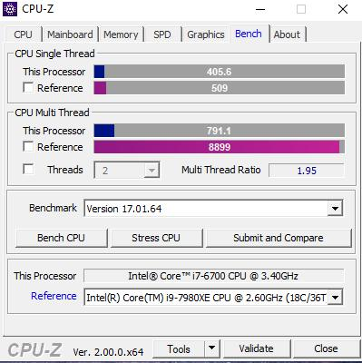
WinDirStat
WinDirStat (https://windirstat.net/) analiza qué es lo que más ocupa en las unidades de disco. Descárgalo, analiza el disco duro y responde:
1.7 ¿Bajo qué licencia está publicado?
1.8 ¿Existe una versión para Linux y macOS?
1.9 ¿Cuál es el archivo más grande que ha encontrado?
Ejercicio 2: Escritorio y explorador#
Acceso directo en el escritorio
Crea un acceso directo a la calculadora en el escritorio. La calculadora se abre con el comando
calc.exe.Sube el pantallazo1.
Opciones de Windows
2.1 Cambia el protector de pantalla y configúralo para que el monitor se apague a los 15 minutos y los discos duros no se apaguen nunca. ¿Cómo lo has hecho?
2.2 ¿Cómo consigues que se vean los archivos ocultos?
2.3 ¿Qué pasos sigues para comprimir una carpeta que está en el escritorio?
Búsquedas
Consulta el apartado Explorador de Windows y responde:
2.4 Busca todos los archivos de C: que empiecen por no y acaben por exe. ¿Cómo lo has hecho?
2.5 ¿Cómo buscarías todos los ficheros de
C:\Windows(incluidas las subcarpetas) que empiecen por M, con cualquier extensión?2.6 ¿Cómo buscarías todos los ficheros creados hace un mes?
2.7 ¿Cómo buscarías todos los ficheros de
C:\Windows(incluidas las subcarpetas) que contengan la palabra Multimedia?2.8 ¿Cómo buscarías todos los ficheros creados entre el 1 de enero de 1999 y hoy que contengan la palabra Screen?
2.9 ¿Cómo buscarías todos los ficheros con un tamaño máximo de 300 KB?
La papelera
Crea la carpeta A01 en el escritorio con la siguiente estructura:
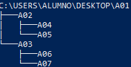
Selecciónala con el ratón y pulsa Supr.
Abre la papelera y restáurala. 2.10 ¿Cuánto espacio disponible tiene la papelera?
Vuelve a seleccionar la carpeta A01 en el escritorio y pulsa Mayús + Supr. 2.11 ¿Puedes volver a restaurarla?
Ejercicio 3: Equipo, usuarios y red#
Cambiar el nombre del equipo
Abre una terminal (Inicio / Ejecutar /
cmd) y ejecuta el comandohostname.Cambia el nombre del equipo por PC-tuapellido1:
Panel de control / Sistema y seguridad / Sistema
Nombre de equipo / Cambiar el nombre de este equipo
Reinicia el equipo y vuelve a ejecutar
hostname.
Sube el pantallazo1, en el que se vea el cambio con el comando hostname.
Cuenta local de administrador
Crea una cuenta local con tu apellido:
Inicio / Configuración / Cuentas / Familia y otros usuarios.
«No tengo los datos de inicio de sesión de esta persona».
«Agregar un usuario sin cuenta Microsoft».
Escribe como nombre de usuario tuapellido, una contraseña y las preguntas de seguridad, y pulsa Siguiente.
Ahora cambia la cuenta a administrador:
En Configuración / Cuentas / Familia y otros usuarios, selecciona la cuenta y pulsa Cambiar el tipo de cuenta.
En Tipo de cuenta, selecciona Administrador y Aceptar.
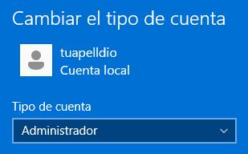
Inicia sesión con la nueva cuenta y sube el pantallazo2, en el que se vea que es administrador.
Dirección IPv4 estática
Pon la máquina virtual en adaptador puente y configura en Windows:
Dirección IP: 10.4.X.Y/8 (máscara 255.0.0.0)
Puerta de enlace: 10.0.0.2
DNS: 8.8.8.8
Si usas un portátil, déjalo en DHCP.
Sube el pantallazo3, como este:
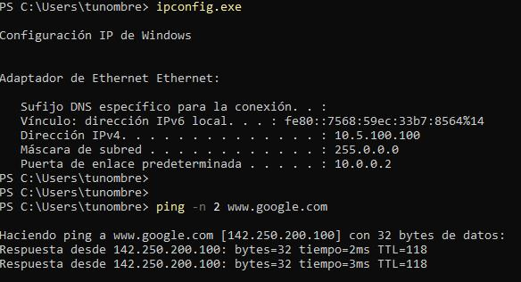
Escritorio remoto
Conéctate a Windows por escritorio remoto. Antes tienes que habilitarlo en Configuración / Sistema / Escritorio remoto.
Si te conectas desde Linux:
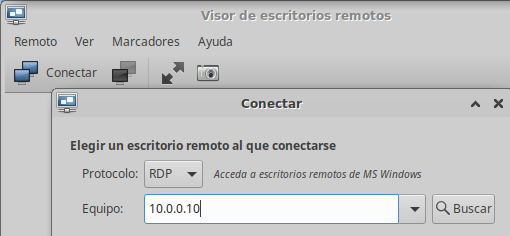
Si te conectas desde Windows:
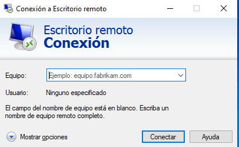
Sube el pantallazo4, en el que se vea que te has conectado, ejecutando
ipconfigyquery session: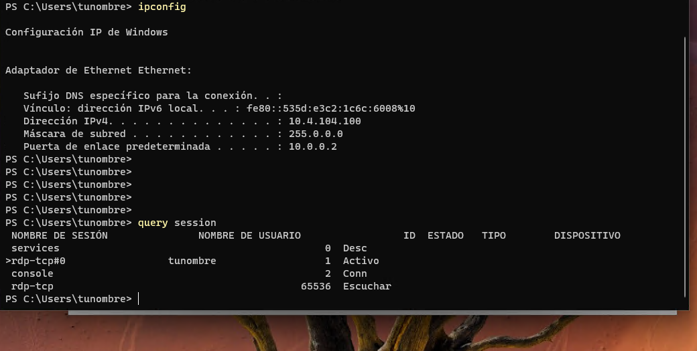
Ayuda: para que los dos equipos estén en la misma red, usa la IP estática del apartado anterior en adaptador puente (con un portátil, usa DHCP):
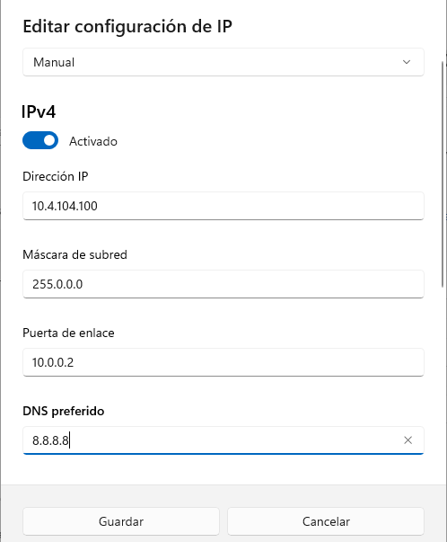
Este sería el caso de que la IP de tu equipo fuese:
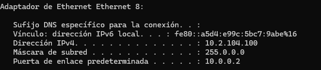
Es decir, 10.4.X.Y, siendo X e Y los números correspondientes a tu IP.
Ejercicio 4: Discos y copias de seguridad#
Disco duro nuevo
Con la máquina de Windows 11 apagada, en Configuración / Almacenamiento añade un disco nuevo de 50 GB reservado dinámicamente.
Selecciónalo y marca Conectable en caliente.
Arranca Windows y busca en Inicio Crear y formatear particiones del disco duro.
Dale formato NTFS, con la etiqueta «tunombre tuapellido1», y móntalo en la unidad E:. Sube el pantallazo1, como este:
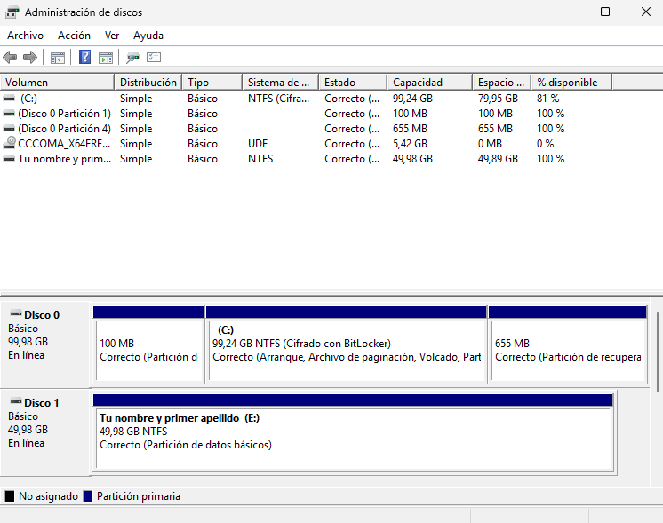
Historial de archivos
Vamos a hacer una copia de seguridad con el Historial de archivos (escribe «Historial de archivos» en el menú Inicio).
Activa el Historial de archivos:
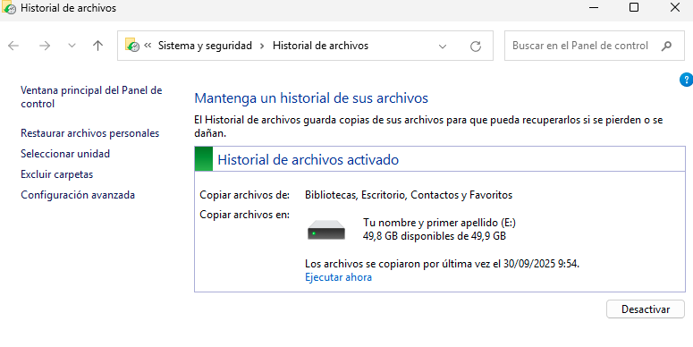
Selecciona la unidad E: que has creado en el apartado anterior:
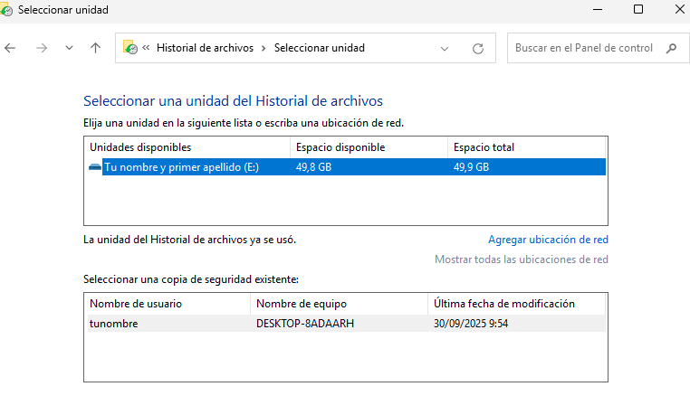
Ejecuta ahora la copia de seguridad:
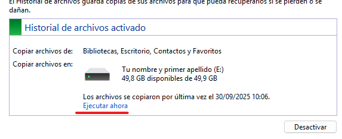
Cuando termine, borra de forma permanente algunos archivos del escritorio y pulsa Restaurar archivos personales:
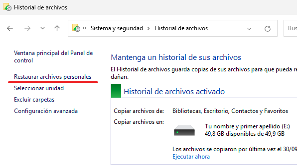
Sube el pantallazo2, del proceso de restauración, como estos:
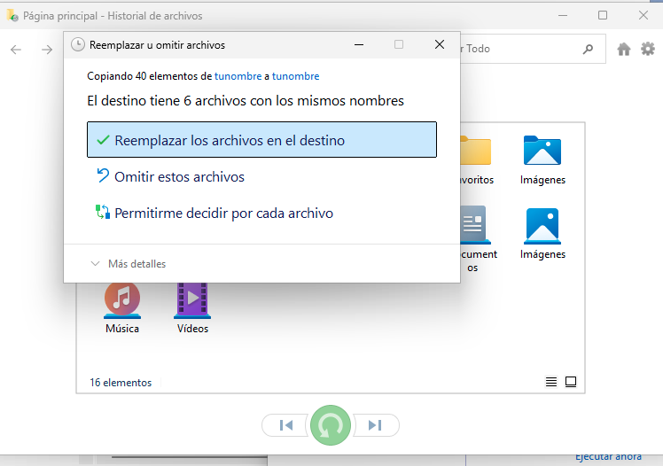
Copia de seguridad de los controladores
Con la herramienta DISM puedes exportar a una carpeta los controladores instalados. Si reinstalas Windows, puedes volver a instalarlos desde esa carpeta (en otra partición, un USB o un disco externo) sin programas de terceros.
Instala el controlador de una impresora (la que quieras).
Abre el Símbolo del sistema como administrador.
Ejecuta:
dism /online /export-driver /destination:e:\Controladores
Sube el pantallazo3, en el que se vea la carpeta
E:\Controladores, por ejemplo: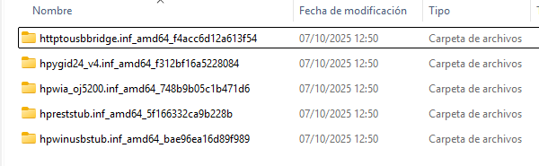
Nota
DISM solo exporta los controladores de terceros, no los de Microsoft. VirtualBox usa controladores genéricos de Microsoft, por eso, si usas una máquina virtual, la carpeta puede quedar vacía.
Ejercicio 5: Recuperación y registro#
Punto de restauración
Los puntos de restauración permiten devolver el sistema a una fecha anterior. Es útil si una actualización o un programa nuevo da problemas.
En el cuadro de búsqueda de la barra de tareas, escribe Crear un punto de restauración y selecciónalo.
Crea un punto de restauración con el nombre de la fecha actual + tunombre (la primera vez tendrás que activar la protección del sistema).
Instala GIMP, descargándolo o desde Microsoft Store.
Crea una carpeta en el escritorio con la fecha y hora actual y tu nombre de usuario.
Restaura el punto de restauración que has creado (
rstrui.exe).
Sube el pantallazo1, del punto de restauración como este:
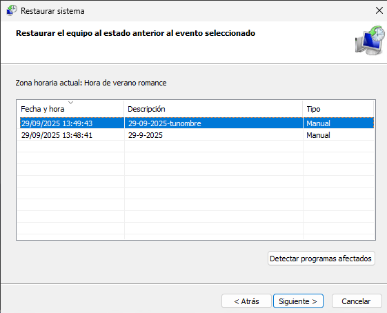
Responde:
5.1 ¿Qué ha pasado con GIMP?
5.2 ¿Los puntos de restauración afectan a los archivos personales?
Copia y modificación del registro
Consulta el apartado El registro de Windows antes de empezar.
Haz una copia de seguridad del registro de forma manual:
En el menú Inicio, escribe
regedit.exey pulsa Intro. Si te pide contraseña de administrador o confirmación, dásela.En el Editor del Registro, haz clic en la clave o subclave de la que quieras hacer la copia.
Haz clic en Archivo / Exportar.
Elige dónde guardar la copia y escribe un nombre en Nombre de archivo.
Haz clic en Guardar.
No hace falta que la restaures, pero si lo necesitaras:
Abre
regedit.exe.Haz clic en Archivo / Importar.
Selecciona el archivo de la copia y haz clic en Abrir.
Ahora vamos a añadir un programa al menú contextual (el del botón derecho en el escritorio):
Ve a la clave
HKEY_CLASSES_ROOT\Directory\Background\shell.Dentro de
shell, crea una clave nueva con el nombre del programa (por ejemplo,Notepad) y, dentro de ella, otra clave llamadacommand.La clave
commandtiene un valor (Predeterminado). Haz doble clic sobre él y escribe, entre comillas, la ruta del.exedel programa: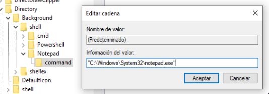
Elige una aplicación distinta de Notepad, crea su entrada en el menú contextual y sube el pantallazo2, como este:
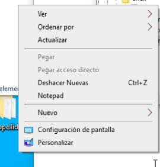
Widgets y modo oscuro
Para quitar los widgets de noticias e intereses de Windows 11, entra en
HKEY_LOCAL_MACHINE\SOFTWARE\Policies\Microsofty crea una clave llamadaDsh. Dentro, crea un valor DWORD (32 bits) llamadoAllowNewsAndInterestscon el valor0.Activa el modo oscuro: en
HKEY_CURRENT_USER\SOFTWARE\Microsoft\Windows\CurrentVersion\Themes\Personalize, haz doble clic enAppsUseLightThemey cambia el valor1por0.Sube el pantallazo3, donde se vea el cambio y tunombre.
Fondo de escritorio
Descarga dos imágenes relacionadas con la astronomía.
Pon una de ellas como fondo de escritorio. Como Windows no está activado, hazlo desde el explorador:
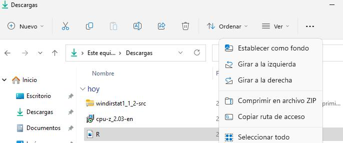
En el registro, ve a
HKEY_CURRENT_USER\Control Panel\Desktop, haz clic con el botón derecho y elige Exportar. Guarda la copia en el escritorio con el nombredesktop.reg.Cambia el valor
WallPaperpor la ruta de la otra imagen: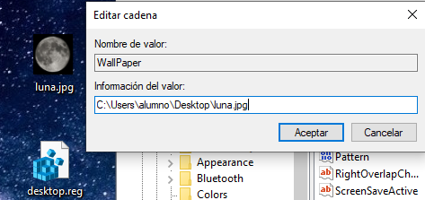
Reinicia el ordenador. 5.3 ¿Qué fondo tiene ahora?
Restaura la copia
desktop.regque dejaste en el escritorio.Reinicia el ordenador. 5.4 ¿Qué fondo tiene ahora?
Cuestionario de configuración#
Para repasar, haz el Cuestionario configuración Windows.